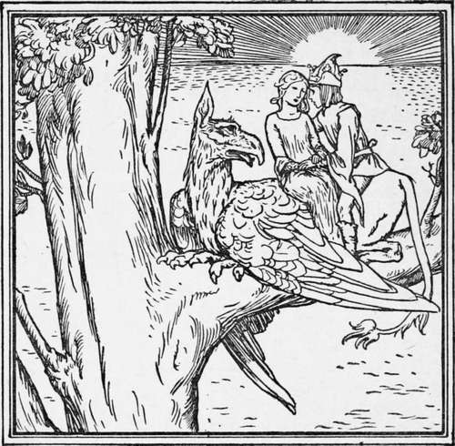

Lily And The Lion. Continued
Description
This section is from the book "Household Tales by Brothers Grimm", by Brothers Grimm. Also available from Amazon: Household Tales by Brothers Grimm.
Lily And The Lion. Continued
So she thanked the sun, and went on her way till eventide; and when the moon arose, she cried unto it, and said, "Thou shinest through all the night, over field and grove; hast thou nowhere seen my white dove?" "No," said the moon, "I cannot help thee; but I will give thee an egg—break it when need comes."
Then she thanked the moon, and went on till the night-wind blew; and she raised up her voice to it, and said, " Thou blowest through every tree and under every leaf: hast thou not seen my white dove?" "No," said the night-wind, "but I will ask three other winds; perhaps they have seen it." Then the east wind and the west wind came, and said they too had not seen it, but the south wind said, "I have seen the white dove—he has fled to the Red Sea, and is changed once more into a lion, for the seven years are passed away, and there he is fighting with a dragon; and the dragon is an enchanted princess, who seeks to separate him from you." Then the night-wind said, " I will give thee counsel. Go to the Red Sea; on the right shore stand many rods—count them, and when thou comest to the eleventh, break it off", and smite the dragon with it; and so the lion will have the victory, and both of them will appear to you in their own forms. Then look round and thou wilt see a griffin, winged like a bird, sitting by the Red Sea; jump on to his back with thy beloved one as quickly as possible, and he will carry you over the waters to your home. I will also give thee this nut," continued the night-wind. " When you are half-way over, throw it down, and out of the waters will immediately spring up a high nut-tree on which the griffin will be able to rest, otherwise he would not have the strength to bear you the whole way; if, therefore, thou dost forget to throw down the nut, he will let you both fall into the sea."
So our poor wanderer went forth, and found all as the night-wind had said; and she plucked the eleventh rod, and smote the dragon, and the lion forthwith became a prince, and the dragon a princess again. But no sooner was the princess released from the spell, than she seized the prince by the arm and sprang on to the griffin's back, and went off carrying the prince away with her.
Thus the unhappy traveller was again forsaken and forlorn; but she took heart and said, "As far as the wind blows, and so long as the cock crows, I will journey on, till I find him once again." She went on for a long, long way, till at length she came to the castle whither the princess had carried the prince; and there was a feast got ready, and she heard that the wedding was about to be held. " Heaven aid me now! " said she; and she took the casket that the sun had given her, and found that within it lay a dress as dazzling as the sun itself. So she put it on, and went into the palace, and all the people gazed upon her; and the dress pleased the bride so much that she asked whether it was to be sold. "Not for gold and silver," said she, "but for flesh and blood." The princess asked what she meant, and she said, "Let me speak with the bridegroom this night in his chamber, and I will give thee the dress." At last the princess agreed, but she told her chamberlain to give the prince a sleeping draught, that he might not hear or see her. When evening came, and the Prince had fallen asleep, she was led into his chamber, and she sat herself down at his feet and said, "I have followed thee seven years. I have been to the sun, the moon, and the night-wind, to seek thee, and at last I have helped thee to overcome the dragon. Wilt thou then forget me quite ? " But the prince all the time slept so soundly, that her voice only passed over him, and seemed like the whistling of the wind among the fir-trees.
The Princess Carrying The Prince Away.
Then poor Lily was led away, and forced to give up the golden dress; and when she saw that there was no help for her, she went out into a meadow, and sat herself down and wept. But as she sat she bethought herself of the egg that the moon had given her; and when she broke it, there ran out a hen and twelve chickens of pure gold, that played about, and then nestled under the old one's wings, so as to form the most beautiful sight in the world. And she rose up and drove them before her, till the bride saw them from her window, and was so pleased that she came forth and asked her if she would sell the brood. " Not for gold or silver, but for flesh and blood : let me again this evening speak with the bridegroom in his chamber, and I will give thee the whole brood."
Then the princess thought to betray her as before, and agreed to what she asked : but when the prince went to his chamber he asked the chamberlain why the wind had whistled so in the night. And the chamberlain told him all—how he had given him a sleeping draught, and how a poor maiden had come and spoken to him in his chamber, and was to come again that night. Then the prince took care to throw away the sleeping draught; and when Lily came and began again to tell him what woes had befallen her, and how faithful and true to him she had been, he knew his beloved wife's voice, and sprang up, and said, "You have awakened me as from a dream, for the strange princess had thrown a spell around me, so that I had altogether forgotten you; but Heaven hath sent you to me in a lucky hour."
And they stole away out of the palace by night unawares, and seated themselves on the griffin, who flew back with them over the Red Sea. When they were half way across Lily let the nut fall into the water, and immediately a large nut-tree arose from the sea, whereon the griffin rested for a while, and then carried them safely home. There they found their child, now grown up to be comely and fair; and after all their troubles they lived happily together to the end of their days.
Continue to:
- prev: Lily And The Lion
- Table of Contents
- next: Donkey-Wort
Tags
fairy tales, children's stories, brothers grimm, household tales